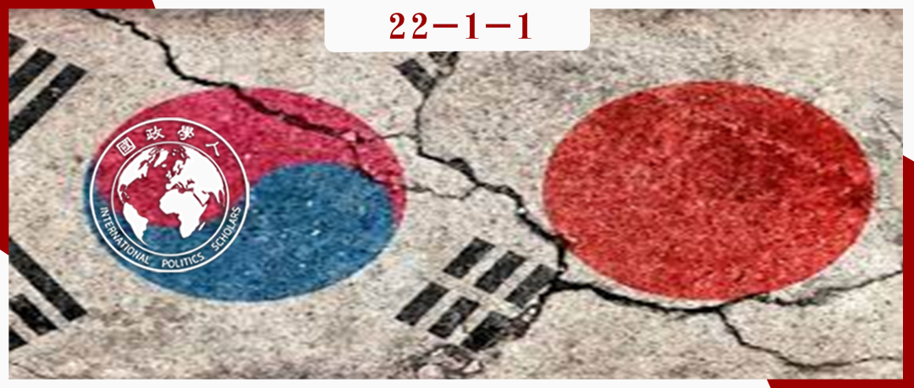

收录于合集
#理论研究 96 个
#《国际关系前沿》2022年第1期 23 个

作品简介
作者： Jungmin Seo，延世大学政治科学与国际关系系中国政治学教授；Young Chul Cho，全北国立大学副教授。
编译： 董黛（国政学人编译员，中国人民大学国际关系学院研究生）
来源： Seo, J., & Cho, Y. (2021). The emergence and evolution of International Relations studies in postcolonial South Korea. Review of International Studies, 47(5), 619-636. doi:10.1017/S0260210521000504
归档： 《国际关系前沿》2022年第1期，总第40期。

内容摘要
本文研究了国际关系作为一门学科是如何在韩国兴起和演变的，重点关注了韩国特殊的殖民和后殖民历史。本文研究了为什么韩国国际关系的研究一直深受国家中心主义和实证主义（美国中心主义）的影响，同时也揭示了国际历史是如何在制度上和知识上塑造了韩国国际关系研究的现状。本文认为，韩国的国际关系学在很大程度上是所属时代的政治安排的体现，而并未表现出学术的独立或对其政府和公民社会的指引，因为他们面临世界政治中极艰难的权力结构。与此相关的是，本文揭示了韩国国际关系研究中扭曲的后殖民性，即在其知识生产/体系中弱化甚至根除了非西方的日本殖民遗产的影响，转而将西方/美国作为韩国安全和发展的理想现代性模式。本文还表明，韩国国际关系学界最近寻求建立一个韩国国际关系学派以克服其对西方的依赖，然而这似乎并没有摆脱对美国主流国际关系理论的殖民心态。
文章导读
01
引言
目前，韩国被全世界视为一个发达国家，和欧洲、北美国家以及日本同列。大多数发达国家在20世纪初期和中期是西方强国或者帝国，韩国却曾是日本的殖民地之一。七十年前，韩国初成立时，饱受战争摧残，一贫如洗。因此，尽管最近在政治、经济、社会和文化方面取得了成功，韩国无疑是一个后殖民国家。然而，至今后殖民主义的研究在韩国的国际关系中也是一片空白。相反，韩国的国际关系研究一直是美国理性主义国际关系理论的代表。
本文研究了国际关系作为一门学科是如何在韩国出现和发展的，重点是其特殊的殖民和后殖民的历史。在此过程中，本研究考察了韩国的国际关系学为何如此以国家为中心并且以实证主义为主（以美国为中心），同时也揭示了国际历史如何在制度上和知识上塑造了韩国国际关系学的现状。以陈光兴提出的“作为方法的亚洲”为背景，本研究提出了对韩国人、亚洲人和后殖民主义国际关系学者的一个重要观点，以韩国在亚洲的国际关系理论研究经验为参照，“也许能够提供一种新的全球历史观，并提出一系列不同的问题”。这篇文章提出了一些相关的实用性问题。那些致力于在不适合后实证主义和非殖民主义国际关系研究的西方机构环境下做研究的国际关系学生，也许会对此感兴趣。此外，由于对国际关系研究中的西方中心主义持批评态度，探索国际关系理论化不同方式的呼声也越来越高。通过探索韩国国际关系研究的后殖民案例，本研究可以为在仍然同质、霸权化的国际关系学科中寻找差异和平等的全球化运动添砖加瓦。通过披露韩国国际关系研究面对殖民和后殖民霸权的发展，本文扩大了国际关系史学的研究范畴，从而为我们提供了一个关于世界政治的更细微和全面的描述。
本文认为，韩国的国际关系学在很大程度上是所属时代的政治安排的体现，而并未表现出学术的独立或对其政府和公民社会的指引，因为他们面临世界政治中极艰难的权力结构。在制度上，日本殖民国家对韩国长达35年的中央集权和严格控制为韩国的国家主义提供了坚实的基础，在1987年民主化之前，韩国的主要特点是国家机器过度发达，公民社会不发达。在思想上，日本将自己的帝国主义与西方帝国主义区分开来，同时又声称自己具有普世价值的道德优越性，认为其他亚洲民族应该亦步亦趋。日本帝国主义的这种特殊性质，使得韩国知识分子寻求其他的现代性来源，如基督教和西方的理论。后殖民时期的韩国与世界上其他后殖民国家的不同之处在于，在知识系统中，特别是在国际关系研究和社会科学中，弱化甚至根除了殖民遗产。就韩国而言，这种后殖民性在国际关系研究中是扭曲的。
在经历了日本殖民、大国托管、朝鲜战争以及随后的冷战后，早期的韩国领导人和知识分子为了韩国的安全、发展和统一，主动把西方和美国作为理想的模式。在此过程中，他们拒绝了日本和韩国的传统知识体系。可以说，这标志着殖民主义的过去与对西方和美国式未来追求之间的断裂。从那时起，韩国主流国际关系研究一直在模仿美国，甚至韩国国际关系学界最近对构建韩国国际关系学派以克服其西方和美国依赖性的追求也似乎是在殖民心态下运作的。此外，自20世纪90年代末以来，韩国的新自由主义教育体制使韩国的国际关系研究对西方和美国更加依赖。
本文讨论了被日本殖民的经历如何影响了韩国国际关系研究的最初形成；揭示了韩国国际关系研究出现和发展的背景和方式，特别是在韩国从日本治下解放后与西方霸权主义的关系；考察了韩国国际关系研究在其本土研究中克服西方中心主义的方式。最后一节总结了关键的论点，并提出了实现非殖民化的国际关系理论的建议。
02
韩国扭曲的后殖民性和非西方的日式帝国主义：国际关系研究在韩国的演生
韩国的殖民经历可以说是影响韩国国际关系研究产生的最关键因素。韩国殖民历史的以下特点影响了韩国早期国际关系研究的形成：
韩国和日本最初都在中华帝国的治下。在这种以儒家思想为基础的体系下，朝鲜王朝将自己定位在中国之下，日本之上，这在西方进入朝鲜半岛之前已经持续了几个世纪，日本似乎位于传统东亚儒家文明的边界线上。朝鲜“志大事小”的儒家外交惯例很好地体现了这种等级思想。在这种情况下，朝鲜被同一文明中相似而又不如本国的邻国所殖民，在国家心理上比被一个没有联系的、未知的、不相干的他国殖民占领更具有侮辱性。
如果说成熟的殖民主义意味着帝国的普遍主义观点和范畴在非白人殖民地被当作常识，那么在韩国，日本的现代性/帝国主义就是带着西方面具的日式帝国主义。对韩国知识分子来说，日本不一定优越，但它幸运地成为最早在亚洲仿用欧洲现代性的国家。民族主义在1919年的“三一运动”中达到顶峰，让韩国人感到了一种严峻的使命，即通过模仿敌人日本来克服殖民状态。
日本将其殖民地视为帝国的延伸，在其上建立成熟的国家机构，殖民者大规模来此定居，当地精英阶层遭到删汰。与其他类型的殖民通知相比，日本对本地合作者的依赖性很小。此外，日本殖民政府实施了全面的同化政策，禁止朝鲜语教育和朝鲜文字。随着西方现代性被韩国的知识分子所接受，他们把西方视为对抗日本殖民者的唯一可能的保护者。美国传教士创办的早期高等教育机构包括延世大学、梨花女子大学和崇实大学。这些机构通过引进西方的学术体系，塑造了韩国社会知识分子的谱系。韩国第一任总统李承晚即于1910年获得普林斯顿大学的博士学位。
殖民统治时期，只有一个学术机构——京城帝国大学同时履行教育和研究的职能。然而，它将韩国人排除在知识生产进程之外，教师由东京和京都帝国大学的毕业生组成，他们视韩国的工作为跳板。法律系开设了四门与政治学有关的课程：政治学、政治学史、政治史和外交史。国际关系相关的科目则完全没有涉及。该系的一些韩国学生后来成为首尔国立大学的政治历史、宪法和政治学研究专业的教授，该大学是在美国驻韩军政府下建立的。
韩国知识分子开始意识到，他们应该关注国际环境的演变——不是文明政治，而是作为新世界规范的国际政治。
其次，针对日本帝国主义/殖民主义，民族主义和国家建设在韩国变得比其他价值更重要。这两个概念都是通过日本从欧洲引入的，对于在威斯特伐利亚体系中成为一个独立、平等的行为体，以及取代以中国为中心的朝贡体系至关重要。国家主义是当地知识分子在韩国进行国际关系研究的认识论、本体论和伦理学基础的核心。
最后，在韩国的日本殖民政府是霸权主义的，但由于非西方日本帝国主义的特殊性，它无法垄断殖民社会的思想。对于后殖民地时期的韩国知识分子来说，为了驱逐“他者”（日本），“自我”（韩国）需要使用另一个（西方现代性）霸权工具。
03
韩国国际关系研究对西方/美国式未来的追求，及被殖民的过去的抛弃
1950年，朝鲜战争爆发。人们普遍认为，韩国别无选择，只能在冷战中加入自由世界集团，以确保其国家生存和国家建设。
在殖民统治的最后阶段，日本当局将所有本土高等教育机构从学院降级为职业学校，使京城帝国大学成为该殖民地唯一的学院级研究教育机构。韩国解放后，京城帝国大学被改组为首尔国立大学。首尔国立大学的政治学系成立于1946年，并开始开设国际政治学导论课程。不久之后，所提供的国际政治课程扩展到外交史、朝鲜外交史、国际组织、殖民研究、国际法、国际关系、外交政策和东西方外交史。
直到1950年代中期，政治学学科都深受殖民主义遗产的影响。首尔帝国大学政治学教育的殖民主义遗产在后殖民时代的韩国政治学早期阶段的课程中显而易见。如1953年出版的政治学通俗大学教科书所示，政治被定义为“维持社会秩序的治理”，或“建立统治- 服从关系以消除社会中的分裂因素”。政治学中的外交史子领域被边缘化，其大部分的教学和研究领域被转移到主要大学的历史系。
韩国国际关系理论的第一次转型源于1950年代的两本书的出版：赵晓云（Hyowon Cho）的《国际政治学》和李永辉（Yonghui Lee）的《国际政治学原理》。当韩国国际研究协会（KAIS）于1956年成立时，李永辉被选为第一任会长，赵晓云被选为副会长。值得注意的是，这两位作者对待国际关系作为一门学科的态度非常不同。当时，与韩国的同行学者相比，赵晓云是少有的在美国大学获得博士学位的政治学家。赵晓云的《国际政治学》由他在美国的课程读物摘录组成。他将国际政治的学术领域视为先进国家的普遍科学，并将自己定位为一个值得信赖的翻译者。对他来说，掌握国际关系的普遍原则和规律是像韩国这样的新生国家制定外交政策的先决条件，其主要目标是在敌对的世界中生存。
相反，李永辉的《国际政治学原理》带有民族主义色彩，对概念上的普世主义持怀疑和批评态度；相反，它强调了韩国和东亚的独特经验。对他来说，1950年代之前的国际政治是欧美地区政治的延伸。因此，韩国的国际关系研究应该有一个本土的动机。所以，根据李永辉的说法，发展韩国的国际关系理论是当务之急。
在这两本重要出版物出现的前后，许多关于国际关系的西方经典著作被翻译成韩文，如卡尔的《二十年危机，1919-1939》，乔治·凯南的《美国外交》，以及基辛格的《核武器与外交政策》等。50年代中期，本土的国际政治著作也开始问世，如《现代外交史》，《联合国简介》，《国际组织概论》。
庆熙大学的教授李元宇（Wonwoo Lee）是这一时期值得一提的翻译家。他几乎翻译了卡尔的所有著作。在20世纪60年代初朴正熙军事政变成功时，他成为了现实政治中的决策者，曾担任公共关系部部长、韩国驻联合国代表和国民议会议员。事实上，如上所述，赵晓云和李永辉也在其职业生涯的某个阶段担任了韩国政府的高级职位。直到现在，学术界和政府之间的旋转门在韩国也很常见。
自1945年韩国解放以来，美国成为韩国对抗共产主义集团的国家安全守护者。20世纪60年代初以来，韩国学生进入美国学术机构的数目激增。1963年，韩国国际研究协会的旗舰期刊《韩国国际研究杂志》创刊，也标志着国际关系领域在韩国学术界的地位得到巩固。
然而，对于韩国的国际关系学者来说，1960和1970年代是“引用的时代”。要在韩国扩大和深化国际关系研究的问题不在于学者们缺乏对欧美国际关系理论的掌握，而是韩国学者之间缺乏共同的关注点。
本地国际关系知识传统的贫乏或不连续，以及韩国和美国之间不对称的知识生产差距，使得韩国国际关系学界无条件和不加批判地从西方和美国引进国际关系理论。输入西方知识的隐性目的是，韩国的国际关系研究必须为国家安全、国家建设和民族建设服务。霸权主义的西方作为一种理想模式被视为实现韩国发展主义目标的最有力工具，因此，人们对西方知识的批判缺乏兴趣。
如前所述，在经历了日本殖民主义、大国托管、朝鲜战争和萌芽中的冷战后，李永辉提出的“为什么我们的国家如此软弱”的问题，给大多数后殖民时期知识分子以深深的震撼。可以说，在刚刚诞生的韩国，这个问题使得国际关系研究有必要成为一门学科。“为什么”这个问题很容易导致“怎么做”这个问题的诞生，例如：我们的国家如何能够自主和繁荣？国家主义是这一思路的核心。
对于早期的后殖民时代的韩国来说，唯一合理的答案就是完全拥抱霸权主义的西方，尤其是美国。解放后，所有韩国大学都抄袭了美国的体制模式。原生主义是后殖民国家进行民族复兴的一个便捷选择，但对韩国来说不是一个选择，因为在以中国为中心的体系下，韩国传统的外交知识被认为是屈辱的、落后的，与作为主权国家的韩国无关。事实上，韩国在日本殖民主义之后在意识形态上严重依赖西方和美国：非西方的、有形的日本殖民主义已经结束，而西方的殖民主义才刚刚开始。
伴随着上述后殖民主义的学术发展，国际关系研究作为一门学科在韩国出现并形成。与寻求科学的答案来描述世界的真正运作的实证主义的主流国际关系研究不同，韩国的国际关系研究则更多的是作为一种在冷战的殖民体系中航行和生活的艺术而出现。
04
新自由主义制度转向和寻找具有普遍性的韩国独特的国际关系理论
1997年和2008年的金融危机启动并加速了韩国社会许多部门的新自由主义制度变革，包括高层的教育方向。在新自由主义发展主义的支持下，走向世界是冷战结束后韩国的国家格言。在新自由主义的体制下，SSCI期刊的出版数量是评价一个学者学术表现的最重要因素，从而影响到学者的工作。
1988年留学政策放开后探索学术生涯的那一代国际关系学者与美国学术界的接触方式与他们的前辈截然不同。随着国内的民主化，他们积极主动地将美国的国际关系理论应用于韩国和东亚的情形。他们还制定了针对国家和地区的研究，这显然超越了简单的翻译。他们努力解释现实主义、自由主义和建构主义的含义和意义，并试图将其应用于过去和当前的东亚国际事务。此外，韩国社会科学中对西方的依赖性和西方中心主义也被大大质疑。
与这种批判意识相一致的是，人们一直在呼吁构建一个韩国的国际关系学派。人们认为，这样做可能使韩国在国际关系研究和现实政治中获得与西方平等的地位。
在寻求一种独特的韩国国际关系理论时，两种方法之间似乎存在矛盾：以普遍性为重点的方法和以特殊性为重点的方法。以普遍性为重点的方法符合赵晓云关于国际关系研究是一种普遍科学的概念，把国际关系看作是一门现代主义的社会科学，未来的韩国国际关系理论应该是普遍适用的，同时又包含了其独特的经验、历史和传统。而以特殊性为重点的方法根据的是李永辉所强调的韩国和东亚在理解国际政治方面的独特经验，即从韩国自己的历史角度确定其独特的历史经验的重要性。
尽管这两种方法之间存在着明显的紧张关系，但它们的相似之处颇多。首先，从内容上看，两者都认真考虑了韩国在理论化方面的独特政治经验。其次，两种方法都将普遍性视为其理论研究的基本核心。概括地说，这两种方法为实现普遍性提出了两种策略。一种是获得西方对平等的国际关系事业的认可；另一种是向西方和非西方国际关系受众输出韩国制造或韩国人制造的国际关系理论。
问题是，为了在国际关系中普遍适用，韩国的国际关系学界似乎采用了实证主义的认识论，这是被主流理性主义者接受为国际关系领域的平等和合法学术分支的最低基本要求。钟坤财（Jong Kun Choi）在《韩国的东亚国际关系理论化》中声称，尽管韩国国际关系学界应该努力解释本国独特的历史经验，但它将以科学普遍主义的严格衡量标准来判断，这反过来将有助于韩国国际关系理论的全球化。
这一策略似乎带来了一个悖论。韩国学术界试图通过建立一个独立的、自力更生的韩国国际关系学派，来克服他们在国际关系研究中对西方的过度依赖。然而，由于采用实证主义认识论来实现与西方一样的普遍性，本土的国际关系学界并不能真的自力更生。韩国的国际关系理论普遍主义者就像在美国主流国际关系理论制定的规则下的玩家。韩国国际关系普遍主义者越是迷恋主流理性主义和实证主义的普遍性，他们对美国国际关系理论的依赖性就越大，韩国学界实际加强了美国国际关系的元理论在韩国的霸权。这可能使韩国的国际关系理论沦为主流实证主义的“独特区域独立变量”的提供者。
关于第二种策略，未来的韩国式国际关系理论很可能会扎根于韩国的历史、传统、思想、意识形态和国家中心的实践。“知识与国际政治：韩国的民主化和学术任务”一文中提到韩国应该成为一个理论输出国。知识输出应该被认为是外交的一个重要方面，韩国学术界和政府应该采取认真措施来促进它。所有这些论点都是以国家为中心的。
此外，似乎没有足够的空间考虑到其他非西方国家如何看待普遍主义的韩国式国际关系理论，以及韩国在普遍主义的名义下所推动的韩国式理论出口。在寻求知识和外交殖民地的过程中，看似依赖西方的韩国国际关系研究希望努力做到“独立”，却可能会复制霸权关系，以西方人征服自己的方式将其他非西方人征服。
尽管韩国国际关系学术界长期有着对摆脱以美国为中心的知识依赖的呼声，但韩国似乎在寻求自己的殖民地，以在实践中证明其国家国际关系学派的普遍性，同时在理论上巩固美国理性主义的认识论霸权。这揭示了美国国际关系理论作为中心，韩国国际关系理论作为半外围，全球南方国际关系理论作为外围的等级和不平等关系的殖民纽带。
05
结论
韩国在日本帝国统治下的殖民经历，在很大程度上决定了韩国国际关系研究的最初形成。在制度上，日本殖民国家对韩国长达35年的中央集权和严格控制为韩国的国家主义提供了坚实的基础，韩国在1987年民主化之前的主要特点是国家过度发展，公民社会不发达。国家主义也是当地知识分子在韩国精心打造国际关系研究的元理论基础的核心。
然而，在非西方的日本殖民国家无法垄断韩国殖民时期的知识界。韩国知识分子寻求其他的、可能是更好的现代性来源，以对抗日本帝国主义。
为了成为威斯特伐利亚体系中独立、平等的成员，韩国发现并开始主动将西方作为理想模式。韩国渴望融入西方和美国，同时拒绝日本和韩国的传统知识体系。这标志着殖民主义和传统历史的中断，以及对西方和美国的追求。因而韩国主流国际关系理论一直在模仿美国国际关系理论。
韩国的国际关系研究倾向于不加反思地验证“主流国际关系理论”的特定西方特征，来判断韩国及其国际关系研究的进步和退步。然而，问题是，西方不是所有文明的标准，它是一种选择。应该拒绝的不是西方，而是韩国国际关系学界心态中的西方中心主义。非殖民化的国际关系研究既是一种心态，也是一种理论和实践。事实上，这是一个痛苦的过程，涉及到自我批判、自我否定和自我发现的实践，但为了形成一个不那么受胁迫、更有反思性和尊严的主体性的愿望，必须这样做。
译者评述
本文系统地按照时间顺序梳理了韩国国际关系理论在二战后的发展历程，分析了韩国国际关系理论发展的基本特征，并为韩国国际关系研究的进一步发展指明了方向。韩国在经历日本殖民后，根除了殖民遗产对韩国国际关系研究的影响并选择了西方中心主义的道路。在研究对象方面主要探讨以美国为中心的地区偏向性问题，对西方理论研究成果未加批判或研讨而全盘接受并适用于现实问题。在研究路径上以引进国外新的理论研究成果并进行韩国式阐释为主，而以新的视角揭示或进行规范的实证研究方面的论文则相当匮乏。[1]即使韩国学界已有意于建立自己的学派并削弱西方主流理论对韩国的影响，但仍然摆脱不了西方中心主义的阴影。作者在文末也再次呼吁韩国学界拒绝韩国国际关系学界心态中的西方中心主义并不断自我批判、自我否定和自我发现。这是一个艰辛的过程，对于亟待发展本国国际关系理论的各国而言也有着借鉴作用。
参考文献
[1] 崔珉旭：《韩国的国际关系研究:一项初步评估》，《世界经济与政治》2012年第4期，第106-123页。
词汇整理
后殖民性 Postcoloniality
殖民主义 ****Colonism
去殖民化 ** Decolonization **
审校 | 杨佳霖 姚博闻
排版 | 叶拯 方引弓
文章观点不代表本平台观点，本平台评译分享的文章均出于专业学习之用, 不以任何盈利为目的，内容主要呈现对原文的介绍，原文内容请通过各高校购买的数据库自行下载。